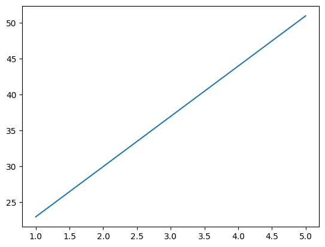
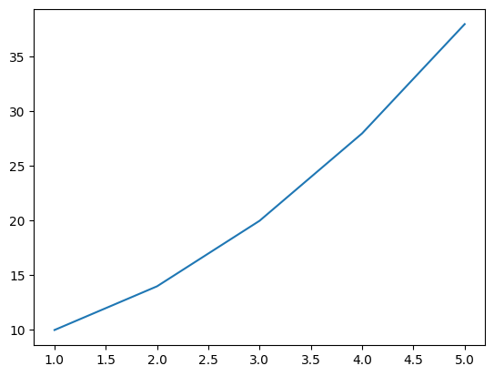
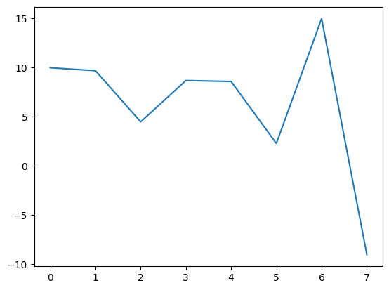
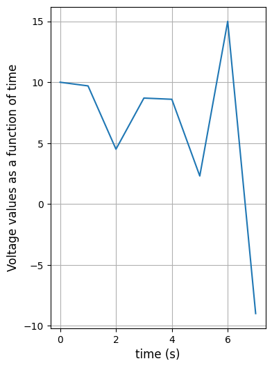

import numpy as npCS 1010
Week 2 - Numpy, Matplotlib, and Pandas Intro
Instructor:
Prof. Kartik Bulusu [CS & MAE]
GTA:
Oscar Southwell [EMSE]
UTAs:
Sameen Ahmad [CS], Talia Novack [CS]
LAs:
Manue Alaimo [CS], Selamn Eris [CS], Saif Alzaabi [CS], Pravin Khanal [CS], Gustavo Londono [CS], Amy Longua [CS]
Grader:
Rutvik Solanki [CS]
If you have any questions, please feel free to send a slack message or email to a member of the teaching team or come to office hours! We are happy to help!!
Introduction to Numpy
Numpy works with concepts called arrays, which are essentially collections of numbers.
We can establish numpy arrays in a lot of ways, but in order to do so, we need to have the library imported into our session of DeepNote. Let’s start with that!
You’ve seen the following cell before
Numpy as a calculator
powers_of_10_array = np.array([1, 10, 100, 1000])
#element-wise addition
new_array2 = powers_of_10_array + 2
print(new_array2)
#in one operation, using numpy[ 3 12 102 1002]Similarly we can do other types of math!
Numpy is like the math library which means we have access to sin, cos, absolute value, hyperbolics, exponentials, and all kinds of fun functions
#similarly, element-wise multiplication
new_array3 = powers_of_10_array * 2
print(new_array3)
#how about sin(x) for each element in the array? (in radians)
new_array4 = np.sin(powers_of_10_array)
print(new_array4)[ 2 20 200 2000]
[ 0.84147098 -0.54402111 -0.50636564 0.82687954]We can also do math with two arrays of the same size!
We probably will not have time to visit this in class, but we have included it here if you’d like to go above and beyond!
#Two Array Math
array1 = np.array([8, -7, 6, -5, 4, -3])
array2 = np.array([1, 2, 3, 4, 5, 6])
#we can do element-wise math on both arrays
sum_array = array1 + array2
print(sum_array)
print()
difference_array = array1 - array2
print(difference_array)
print()
product_array = array1 * array2
print(product_array)
print()
quotient_array = array1 / array2
print(quotient_array)[ 9 -5 9 -1 9 3]
[ 7 -9 3 -9 -1 -9]
[ 8 -14 18 -20 20 -18]
[ 8. -3.5 2. -1.25 0.8 -0.5 ]Null Arrays and Appending
What if we collect data a little at a time?
First we establish something called a null array. This is a blank canvas for us to paint data into later.
Then we append the data in one element at a time until we are done. Think loops!
Then we can do our math to this data!
#here we create the null array d
d = np.array([])
print(d)
print()
#here we append to d the values from 0-9 (inclusive)
for i in range(10):
d = np.append(d, i)
#uncomment below for intermediate steps!
#print(d)
#print()
print(d)[]
[0. 1. 2. 3. 4. 5. 6. 7. 8. 9.]We can also establish numpy arrays in other ways! Feel free to look into np.linspace(), np.arange(), np.zeros(), np.ones(), and np.empty_like() on the documentation if you are curious!
Documentation is linked here
Matrices with Numpy!
A matrix is a collection of data arranged into a set of columns and rows.
For example, the following matrix A is a 2x2 matrix, because it has 2 rows and 2 columns.
\(A = \begin{bmatrix} 2&1 \\ -3&5 \end{bmatrix}\)
Similarly, the following matrix B is a 3x2 matrix, because it has 3 rows and 2 columns
\(B = \begin{bmatrix} 6&6 \\ 5&9 \\ -12&-19 \end{bmatrix}\)
#To establish a matrix using numpy, we use the np.array() function again!
#We pass in a big set of brackets for the matrix, then list out our rows one at a time in internal brackets
A = np.array([[2,1],[-3,5]])
print(A)[[ 2 1]
[-3 5]]B = np.array([[6,6],[5,9],[-12,-19]])
print(B)[[ 6 6]
[ 5 9]
[-12 -19]]Here are some matrices we won’t see in class due to time constraints
print('Example 2x2 Matrix:')
mat_2x2 = np.array([[10,20],[50,-18]]) #2x2 matrix
print(mat_2x2)
print()
print('Example 3x2 Matrix:')
mat_3x2 = np.array([[15,-6],[17,3],[-12,-19]]) #3x2 matrix
print(mat_3x2)
print()
print('Example 2x3 Matrix:')
mat_2x3 = np.array([[1,2,3],[4,5,7]]) #2x3 matrix
print(mat_2x3)Example 2x2 Matrix:
[[ 10 20]
[ 50 -18]]
Example 3x2 Matrix:
[[ 15 -6]
[ 17 3]
[-12 -19]]
Example 2x3 Matrix:
[[1 2 3]
[4 5 7]]Here are some of the types of ways to create matrices in numpy:
A = np.matrix([[-1, 2],[3, 4]]) #Use np.matrix instead of np.array
B = np.matrix('1 2; 3 4') #Use Matlab-style syntax
C = np.arange(25).reshape((5, 5)) #Create a 1-d range and reshape
D = np.array(range(25)).reshape((5, 5)) #Pass a Python range and reshape
E = np.array([5] * 25).reshape((5, 5)) #Pass a Python list and reshape
F = np.empty((5, 5)) #Allocate but don't initialize
G = np.ones((5, 5)) #Initialize with ones
H = np.zeros([5, 5]) #Initialize with zeros
I = np.ndarray((5, 5)) #Use the low-level constructor
J = np.empty_like(C) #Use a prototype as the basisMatrix Manipulation in Numpy
You can multiply matrices using the np.dot(A, B) method
Rules to remember: - mxn * nxp yields mxp - nxm * nxp yields NO CAN DO
If you care to, you can read more about the dot product operation here
A = np.array([[1, 3],[2,7]]) #2x2
B = np.array(([[1, 2, 4], [2, 3, 5]])) #2x3
C = np.dot(A,B)
print(C) #result is 2x3
#D = np.dot(B, A)
#NO CAN DO![[ 7 11 19]
[16 25 43]]Transpose of a matrix using np.transpose()
print(A)
print()
A_transpose = np.transpose(A)
print(A_transpose)[[1 3]
[2 7]]
[[1 2]
[3 7]]print(B)
print()
B_transpose = np.transpose(B)
print(B_transpose)[[1 2 4]
[2 3 5]]
[[1 2]
[2 3]
[4 5]]Introduction to Plotting with Matplotlib
We often want to plot our data. We will certainly go more in depth later, but for now, lets use numpy to get a line plot created
#this will be our standard import for matplotlib pyplot!
from matplotlib import pyplot as pltLet’s first establish some basic arrays to visualize!
array1 = np.array([1, 2, 3, 4, 5])
print(array1)
array2 = array1 * 7 + 16
print(array2)
array3 = array1**2 + array1 + 8
print(array3)[1 2 3 4 5]
[23 30 37 44 51]
[10 14 20 28 38]#for the most basic plots we can use plt.plot(x, y)
plt.plot(array1, array2);
#I added a semi-colon at the end to clean up an unwanted message (not necessary)
plt.plot(array1, array3);
Brief intro to Pandas
Pandas uses a big matrix to store data in what they call a “DataFrame”
This is most important to us to store our data then use it for plotting!
#here is our standard pandas import statement
import pandas as pdWe will use the pd.read_csv(filename) functionality for the lab today!
df = pd.read_csv('/work/Fall 2022/for_students/Week2/TutorialFile.csv')
display(df)| Time | Voltage | |
|---|---|---|
| 0 | 0 | 10.0 |
| 1 | 1 | 9.7 |
| 2 | 2 | 4.5 |
| 3 | 3 | 8.7 |
| 4 | 4 | 8.6 |
| 5 | 5 | 2.3 |
| 6 | 6 | 15.0 |
| 7 | 7 | -9.0 |
time = df.loc[:, 'Time'].values
print(time)
volts = df.loc[:,'Voltage'].values
print(volts)[0 1 2 3 4 5 6 7]
[10. 9.7 4.5 8.7 8.6 2.3 15. -9. ]plt.plot(time, volts);
from matplotlib import pyplot as plt
import pandas as pd
df = pd.read_csv('/work/Fall 2022/for_students/Week2/TutorialFile.csv')
time = df.loc[:, 'Time'].values
volts = df.loc[:,'Voltage'].values
fig, ax = plt.subplots(figsize=(4,6))
ax.plot(time, volts)
ax.set_xlabel('time (s)', fontsize=12)
ax.set_ylabel('Voltage values as a function of time', fontsize=12)
ax.grid()